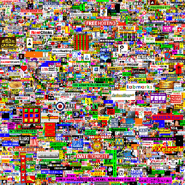

Early Beginnings:
1990, December 25 – WorldWideWeb
- The first web browser, later renamed to Nexus
- Tim Berners-Lee
1991, August – WorldWideWeb Virtual Library & The First Website
- Both by Tim Berners-Lee
1993, July 18 – First Photo on the Internet
- Tim Berners-Lee and his team tested out a new update that would allow for photos
- They used a photo of Les Horribles Cernettes, a pop parody group
Web Design Rising in Popularity:
1995, May 25 – Batman Forever Website
- By Jeffrey Zeldman, Steve McCarron and Alec Pollak
- First to use the WWW service as a marketing and visual medium
1998, January 22 – A List Apart
- By Jeffrey Zeldman and Brian Platz
- A mailing list that provided readers with regular news from the world of web design, web standards, and web development
- In January 1999, Jeffrey Zeldman started publishing A List Apart as a webzine
1998, March – Design is Kinky
- Yes, that's the name…
- By Andrew Johnstone
- One of the first design community websites
- Lots of experimental and unconventional web design
- Ended in 2018
1998, October – Kaliber10000 (K10k)
- By Michael Schmidt and Toke Nygaard
- Published graphical works of talented designers becoming a source of inspiration for first generation designers using the web as a visual medium
- Ended in 2011
2000, May 5 – Favorite Website Awards (The FWA)
- By Rob Ford
- A gallery of unique and innovative websites
- After the decline of Flash, it also showed mobile applications or any creative project regardless of technology
2001, March – Pixelsurgeon
- By Jason Aber and Richard May
- The magazine website provided fans with regular news, interviews and tips on interesting sources from the world of design with a focus on the Internet
Responsive Web Design Takes Form:
2001, December – Audi.com
- By Razorfish (a digital agency)
- First to modify its content based on the size of the web browser
2003, May 8 – CSS Zen Garden
- By Dave Shea
- Community gallery of websites
- Offered a HTML template that you can then customize, but only using CSS and one’s own pictures
- Demonstrate the possibilities of CSS in creating visual web design
2005, August 26 – Million Dollar Homepage
- By Alex Tew
- A 1000x1000px grid where Alex Tew would sell 1 pixel for 1 dollar
- Smallest size available to be bought was 10x10px
- On a eBay auction, the last 1000 pixels sold on January 1, 2006

2006, August – Smashing Magazine
- By Sven Lennartz and Vitaly Friedman
- Provides news in the world of web design, user experience, and web development
- The most visited website for web design
2009, July 8 – Dribbble.com
- By Dan Cederholm and Rich Thornett
- Largest community website for designers

Modern Web Design Appears:
2010, October 21 – Flat Design
- Microsoft’s Window Phone 7 launched with a Flat Design user interface
- One of the largest visual trends in web design
2014, June 25 – Material Design
- Introduced by Google